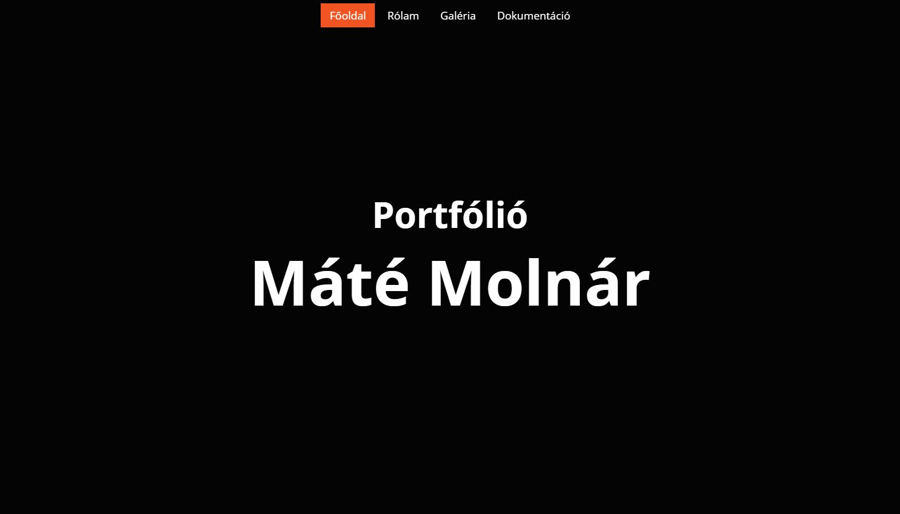
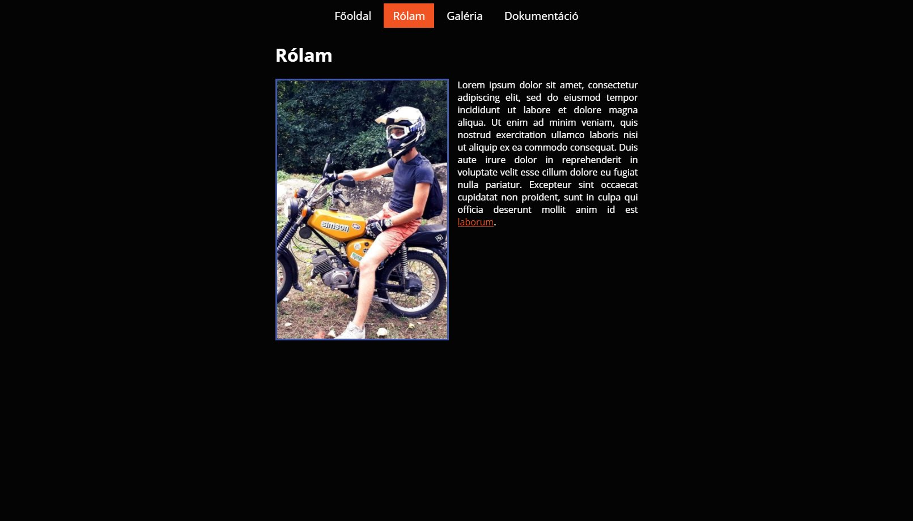
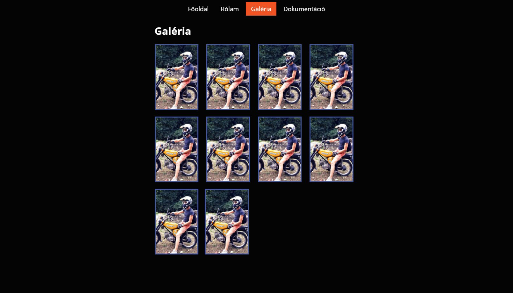
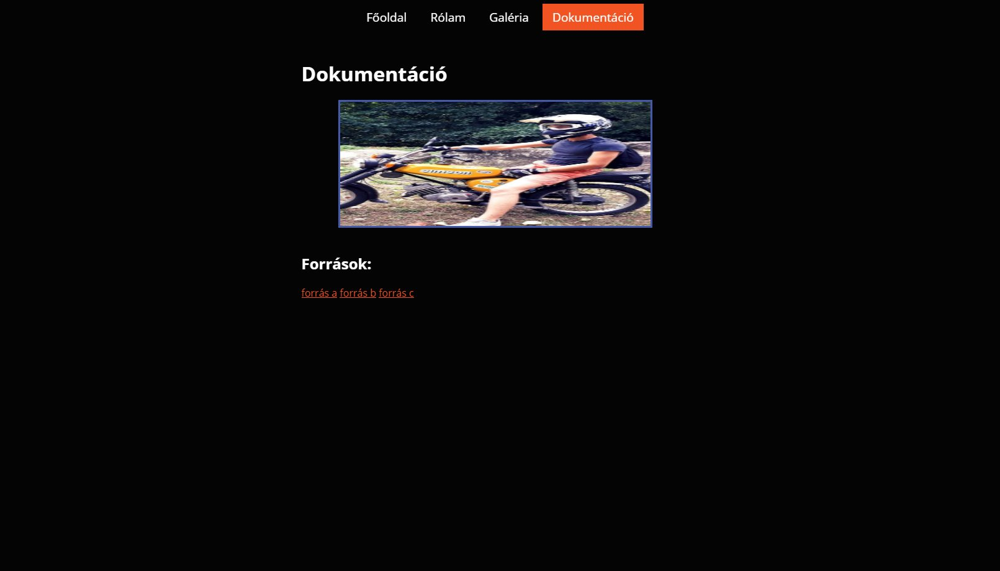

Dokumentáció
A weboldalt a Microsoft "kockás" designjához hasonlóan álmodtam meg. Az eredeti elképzelés szerint világosabb
árnyalatok
lettek volna használva, de a képek kihangsúlyozása miatt sötétebb árnyalatok mellet tettem le végső voksomat.
Az egyik legnagyobb nehézséget a weblap github pages szolgáltatásra való feltöltése mellet az elemek megfelelő
helyekre
történő igazítása okozta.



